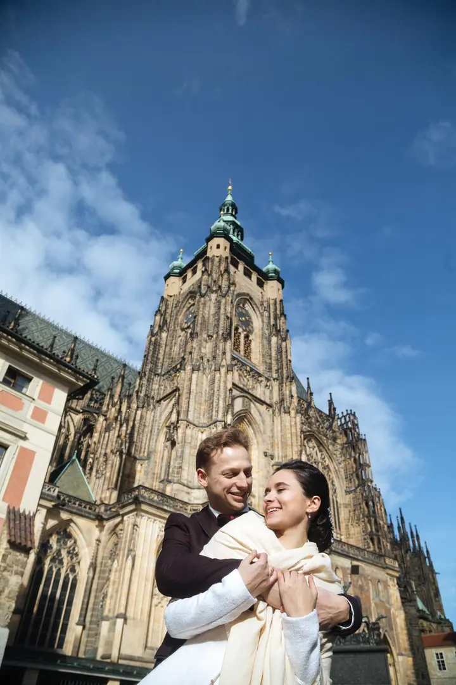
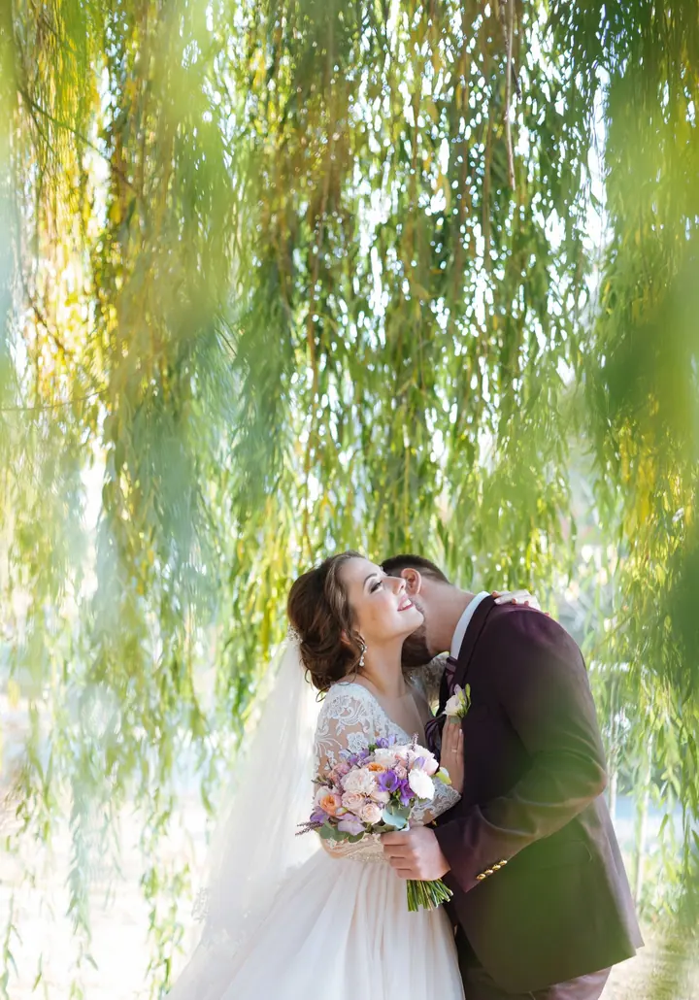
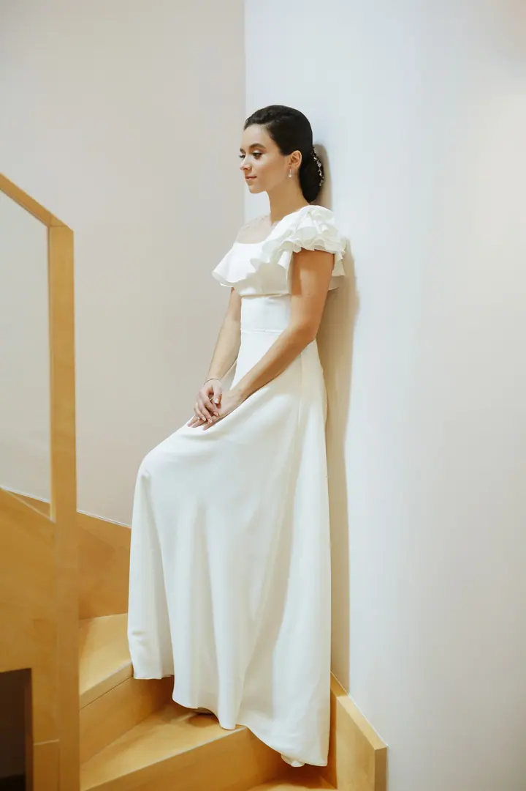
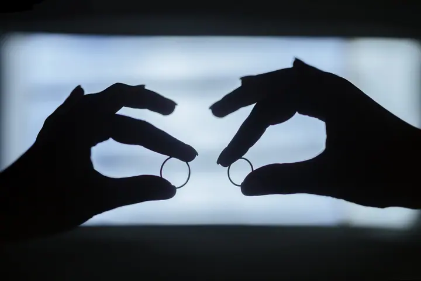
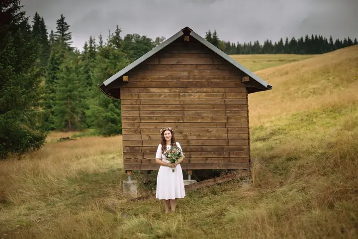

Svatby
Svatbám se věnuji profesionálně už osm let. Fotím je v Praze, po celém Česku i na cestách po světě, vždy v tom stylu, který sedí k vám dvěma.





Jmenuji se Jana Zolotoverchaja a jsem fotografka z Česka, která fotí v Praze i na cestách po světě. Osm let se věnuji svatbám a rodinám a každé focení přizpůsobuji povaze lidí, které fotím.
Více o mně
„Svět je velký a každý člověk je jedinečný.“
— Jana Zolotoverchaja
Svatbám se věnuji profesionálně už osm let. Fotím je v Praze, po celém Česku i na cestách po světě, vždy v tom stylu, který sedí k vám dvěma.
Focení pro páry, které chtějí mít svůj společný příběh na fotkách. Hledám místo a styl, který odpovídá vaší povaze.
Portrét, který vznikne jen pro vás. Styl volím podle toho, jací jste.
Rodinné focení beru stejně vážně jako svatby. Zajímá mě obyčejný den a chvíle, které si budete chtít pamatovat.
Fotografii se profesionálně věnuji osm let, hlavně svatbám a rodinám. Žiji v Česku, ale ráda cestuji, a tak fotím v Praze, po celé republice i v zahraničí.
Svět je velký a rozmanitý a každý člověk je jedinečný. Právě to se snažím zachytit. Fotím obyčejný život a chvíle, které na fotce zůstanou napořád. Nemám jeden styl pro všechny: pracuji v různých stylech podle povahy svých klientů, aby fotky byly jen vaše.
Moje práce se několikrát objevily na obálkách časopisů a pravidelně je publikují americké i české svatební weby a blogy. A hlavně jsem do fotografie pořád zamilovaná.

Napište mi nebo zavolejte, kdy a kde plánujete svatbu nebo focení. Domluvíme se, jestli mám termín volný.
Zajímá mě, jací jste a co od fotek čekáte. Podle toho zvolím styl i místa, která vám budou sedět.
Fotím přirozeně a v klidu, od příprav až po chvíle, kdy už na foťák zapomenete.
Fotky pečlivě vyberu a upravím a pošlu vám je v online galerii, kterou můžete sdílet s blízkými.
Žiji v Česku a nejčastěji fotím v Praze. Ráda ale vyrazím kamkoli po republice i do zahraničí.
Pracuji v různých stylech a vybírám ten, který odpovídá vaší povaze. Někomu sedí elegantní černobílé snímky, jinému volné fotky v přírodě.
Ano, vedle svateb je rodinné focení moje hlavní zaměření. Fotím také love story a portréty.
Cena se odvíjí od rozsahu a místa. Napište mi, co plánujete, a pošlu vám nabídku na míru.